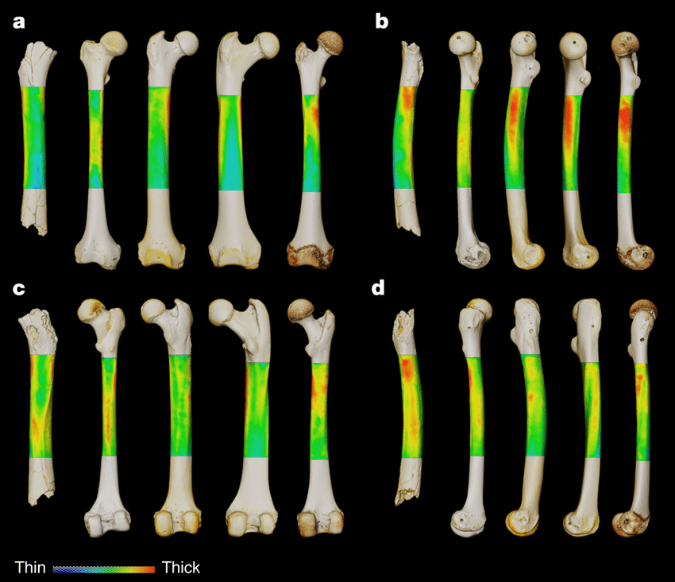

| August 2022 |
| by Do-While Jones |
Chad Man is in the news again.
We stopped publishing our monthly newsletter last December because there just hasn't been much evolution news to report. There was, however, an article this month in the professional journal, Nature, about Chad Man, and a commentary about it in Science News. The articles about Sahelanthropus tchadensis (Chad man) might seem to be current, but they are really about a discovery we described in the October 2002 article, "Chad Man", http://www.scienceagainstevolution.info/v7i1n.htm. Please go back and read what we wrote about it 20 years ago so we don't have to say it all again.
There has been no new discovery. It is just a new analysis of an old fossil. It boils down to this picture:
|
 |
|---|
|
From left to right, the femurs are TM 266-01-063 (Chad Man), modern human, chimpanzee, gorilla and orangutan. The cortical thickness is illustrated for the 80-35% interval of the femoral biomechanical length using a relative scale. This chromatic scale corresponds to the look-up table of cortical thickness, from relatively thin (blue) to relatively thick (red) cortical diaphyseal bone. The extant femurs are roughly at the same size. The TM 266-01-063 femur was scaled by aligning its 80-35% biomechanical interval and the corresponding portion in extant hominoids (pooled). 1 |
Daver's article in Nature claims that the similarity of the partial leg bone of Chad Man when compared to properly scaled leg bones from humans, chimpanzees, gorillas, and orangutans proves that Chad Man walked upright. It begins,
|
Bipedal locomotion is one of the key adaptations that define the hominin clade. Evidence of bipedalism is known from postcranial remains of late Miocene hominins as early as 6 million years ago (Ma) in eastern Africa. Bipedality of Sahelanthropus tchadensis was hitherto inferred about 7 Ma in central Africa (Chad) based on cranial evidence. Here we present postcranial evidence of the locomotor behaviour of S. tchadensis, with new insights into bipedalism at the early stage of hominin evolutionary history. 2 |
Our scientific arguments against this claim are:
These points are so obvious we won't insult you by explaining them.
Surprisingly, Science News didn't make any of these scientific arguments. Instead, they made personal attacks. The subtitle of the Science News article is
| Misconduct allegations over an earlier report on one of the bones hang over the findings 3 |
The third paragraph of the article says,
| Since its discovery, the leg bone has also triggered competing accusations of scientific misconduct and an official investigation by the French government-funded research organization CNRS in Paris. 4 |
The argument is over who should get the credit, as if we cared. Nothing new has been discovered, and nobody knows anything for certain.
Science News admits,
| But a lively debate surrounds the fossils, concerning whether they actually belong to the hominid species, known as Sahelanthropus tchadensis, or to an ancient ape, and to what extent either species could have adopted a two-legged gait. These have become vexing questions as scientists increasingly suspect that ape and hominid species evolved a variety of ways to walk upright, some more efficient than others, around 7 million years ago. 5 |
There is nothing new, which is what keeps us from publishing a newsletter every month!
| Quick links to | |
|---|---|
| Science Against Evolution Home Page |
Back issues of Disclosure (our newsletter) |
| Web Site of the Month |
Topical Index |
Footnotes:
1
Daver, et al., Nature, 24 August, 2022, "Postcranial evidence of late Miocene hominin bipedalism in Chad", https://www.nature.com/articles/s41586-022-04901-z
2
ibid.
3
Bruce Bower, Science News, August 24, 2022, "7-million-year-old limb fossils may be from the earliest known hominid", https://www.sciencenews.org/article/earliest-known-hominid-limb-fossils-sahelanthropus-tchadensis
4
ibid.
5
ibid.